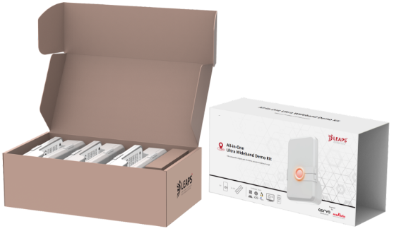
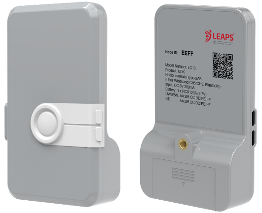
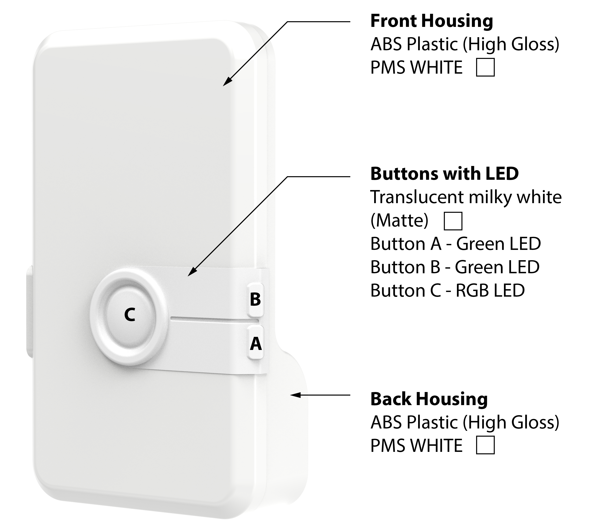
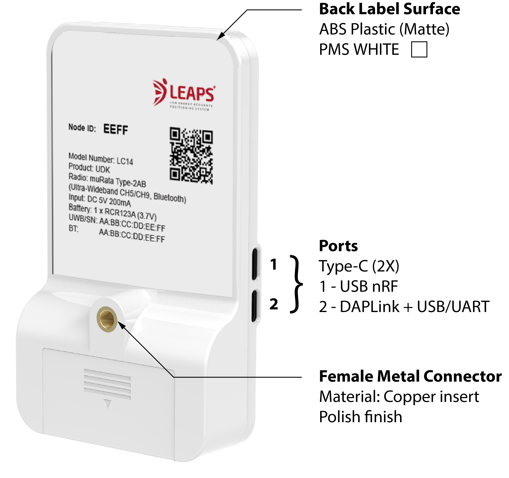
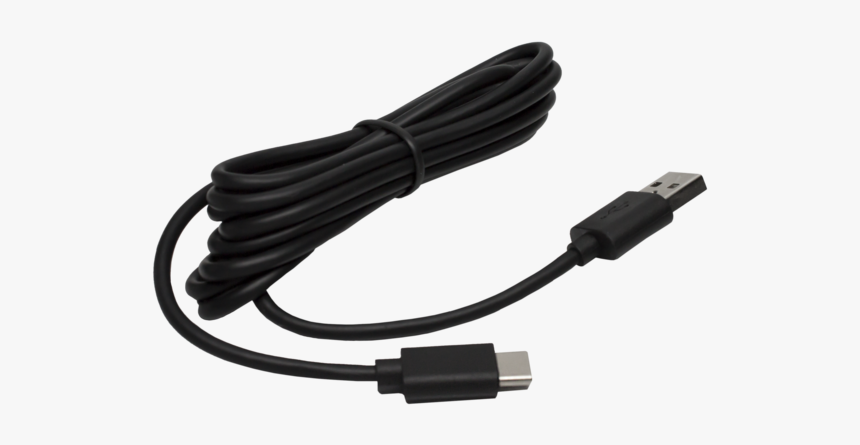
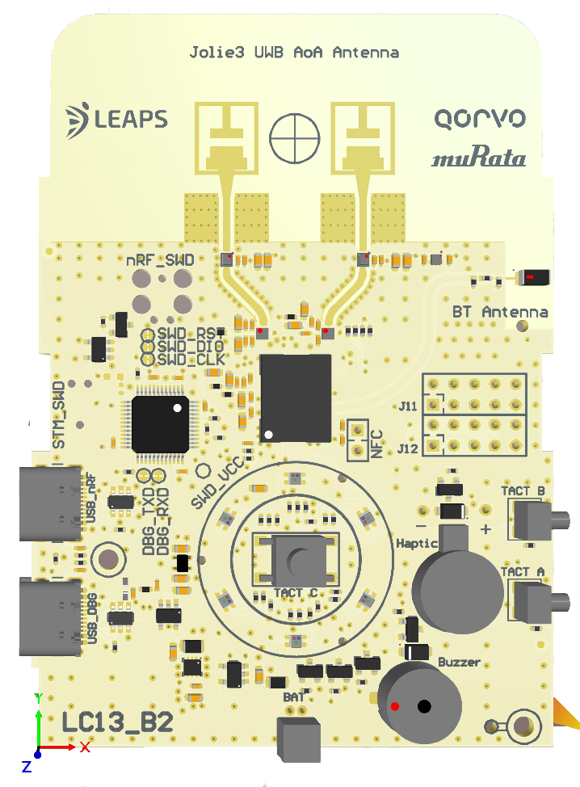
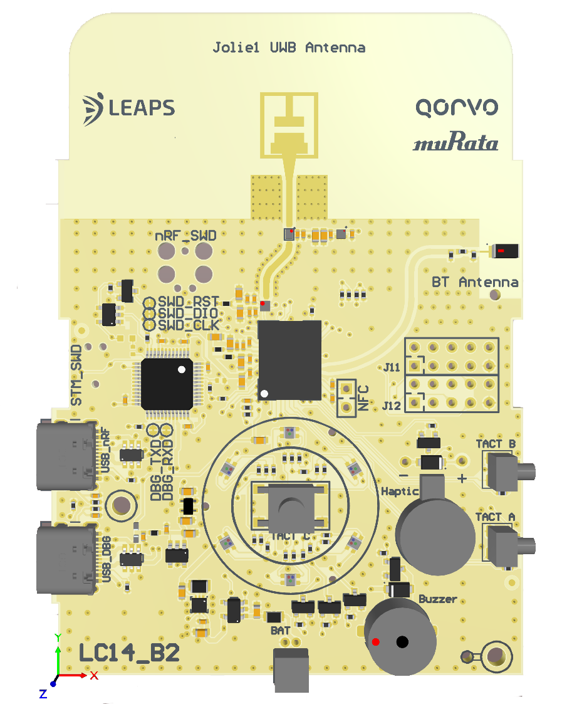

두 장치 사이 거리 · TWR
이동 노드 ↔ 고정 노드 → 두 장치 사이 거리
두 노드가 메시지를 왕복하고 응답 시간을 고려해 전파 비행시간을 추정한다. 거리가 3 m라는 결과 하나만으로는 태그가 앵커의 어느 쪽에 있는지 정해지지 않는다.
고정한 노드와 움직이는 노드가 UWB 신호를 주고받는다. 같은 키트로 두 장치 사이의 거리, 신호가 들어오는 방향, 전시장 안에서의 태그 좌표를 각각 시험할 수 있다.

회색 LC13 한 대, 흰색 LC14 다섯 대와 USB-C 데이터 케이블 두 개가 들어 있다. LC13·LC14는 안테나 구성을 구별하는 모델명이다. 어느 노드를 태그나 앵커로 쓸지는 데모 모드와 설정으로 정한다.




장치 외관·케이블 이미지 출처: LEAPS 구성 목록 · 외형 및 포트 사양


LEAPS가 공개한 B2 보드 상면도. 그림을 선택하면 원본 크기로 볼 수 있다. 아래 경로는 부품 간 기능 관계를 나타낸다.
nRF52840의 측정 명령 → QM33120W의 UWB 패킷 생성 → QM14070 송신 전력 증폭 → UWB 안테나
UWB 안테나 → QM14068 저잡음 증폭 → QM33120W의 패킷 수신·시각 측정 → nRF52840의 측정 결과 처리
| 부품과 위치 | 담당 기능 | 시스템에서 얻는 결과 |
|---|---|---|
| Murata Type 2AB · 보드에 실장한 SiP | UWB 칩, BLE MCU, 가속도계, 기준 클록과 내부 전원 회로를 통합한다. 모듈 외형 10.5 × 8.3 × 최대 1.44 mm. | 태그·앵커 펌웨어가 실행되는 핵심 부품. 완성품에는 보드 안테나와 주변 회로가 추가된다. |
| Qorvo QM33120W · SiP 내부 | 채널 5·9에서 UWB 신호를 주고받는다. 거리 측정에 필요한 송수신 시각을 제공하고, 두 안테나 구성에서는 위상차 측정을 지원한다. | 한 링크의 거리 또는 상대 방위를 구하는 데 쓰이는 관측값. |
| Nordic nRF52840 · SiP 내부 | 측정 순서, 장치 모드와 데이터 전달을 펌웨어로 제어한다. BLE는 장치 발견·설정과 지원 데모의 세션 준비에 쓰인다. | 같은 장치를 설정에 따라 이동 태그, 고정 앵커 또는 게이트웨이 연결 노드로 사용. |
| QM14070 PA / QM14068 LNA · SiP 외부 | PA는 송신 신호를 키우고, LNA는 안테나로 들어온 약한 신호를 낮은 잡음으로 증폭한다. | 무선 링크의 송수신을 보조한다. 거리·각도·좌표 계산은 측정 칩과 펌웨어·측위 엔진이 담당한다. |
| LIS2DW 가속도계 · SiP 내부 | 움직임에 따른 가속도를 감지한다. | 헤드폰에서 좌우로 고개를 돌리는 각속도는 기존 BMI270 자이로 경로를 유지해 측정한다. |
| 버튼·LED·부저·햅틱 / USB·DAPLink · 노드 보드 | 노드 설정·식별, 상태 표시, 프로그램 기록, USB 통신과 디버깅을 지원한다. | 여러 대를 설치할 때 대상 장치를 찾고 PC에서 측정 로그와 동작 상태를 확인한다. |
어느 장치에서 측정하고 어디에서 결과를 읽는지 모드별로 비교할 수 있다.
이동 노드 ↔ 고정 노드 → 두 장치 사이 거리
두 노드가 메시지를 왕복하고 응답 시간을 고려해 전파 비행시간을 추정한다. 거리가 3 m라는 결과 하나만으로는 태그가 앵커의 어느 쪽에 있는지 정해지지 않는다.
LC14 태그 → LC13의 두 안테나 → 거리·도래각 → PC 데모 앱
회색 LC13과 흰색 LC14를 UCI 모드로 구성한다. LC13의 정면을 기준으로 태그 신호가 들어온 방위를 읽는다. 관람객이 제자리에서 고개만 돌리는 동작은 별도 머리 자세 센서로 측정한다.
이동 태그의 송신 → 고정 앵커 4대의 도착 시각 → 게이트웨이 → LEAPS 서버의 태그별 위치
알려진 위치의 앵커들이 같은 송신을 수신한다. 동기화된 앵커들의 도착 시각 차이를 이용해 측위 엔진이 좌표를 구한다. 이 모드에서는 LC14도 앵커가 될 수 있다. DL-TDoA 모드는 반대로 태그가 앵커 신호를 수신해 자기 위치를 구하는 방식이다.
호환 iPhone ↔ NI 모드의 LC14 → iPhone 앱의 상대 거리·방향
Qorvo Nearby Interaction 앱에서 흰색 노드를 찾는 데모다. 방향 표시의 기준은 iPhone이다. 이 화면과 LC13이 각도를 측정하는 PC 데모, 서버가 스마트폰을 이동 태그로 추적하는 기능은 각각 검증해야 한다. Android의 LEAPS Manager는 장치 설정·위치 시각화에 사용한다.
기본 제공과 프로젝트 개발의 경계. 키트와 LEAPS 소프트웨어에서 노드 측정·RTLS·태그 ID별 MQTT 출력을 시험할 수 있다. 관람객별 기기 등록, 스마트폰 재접속 처리와 쌍별 좌표 전달은 전시 앱 개발 항목이다. 헤드폰으로 데이터를 직접 보내려면 다운링크가 가능한 프로파일과 수신 펌웨어가 필요하다.
최종 내장. LC14 하우징 대신 Type 2AB와 외장 안테나를 담은 소형 기판을 제작한다. 머리 방향은 헤드폰 U4 BMI270, 스마트폰 방향은 자체 AR 자세에서 얻는다. 시제품에서 안테나 배치·착용 시 누락률·여러 쌍의 지연을 검증한다.
상자·케이블·외관·보드 이미지는 LEAPS 공식 문서의 자료이며, 기능 설명은 Qorvo·Murata·LEAPS 사양을 기준으로 정리했다. 전시 앱 반환 경로는 프로젝트 설계안이다.
LEAPS 키트 구성 이미지LEAPS 외관 및 보드 이미지QM33120WDK2 제품 페이지